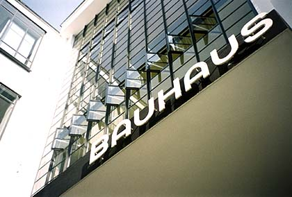

Programación cultural 2019





Publicado por: Coordinación AvH
Con el apoyo del Goethe-Institut organizamos eventos culturales para la sociedad antioqueña que promueven el acercamiento de las culturas, el intercambio y la reflexión.